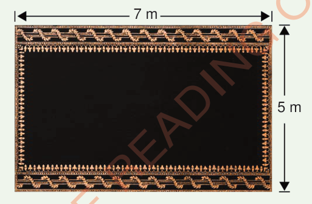

11.
Musa drew a rectangle with a length of 80 mm and a width of 50 mm.
What is its perimeter in centimetres?
12.
The tailor bought a piece of fabric with a length of 2 metres and a width of 1 metre.
What is the perimeter of that piece of fabric in centimetres?
13.
A carpet in the teachers’ office is 7 metres long and 5 metres wide.
Find its perimeter.

14.
The garden has a triangular shape measured: 10 m, 7 m and 6 m.
Find its perimeter.
15.
Four pupils cut a piece of paper in a square shape.
The piece of paper had a perimeter of 16 centimetres.
If they cut the paper into four equal square pieces, what is the perimeter of each square.